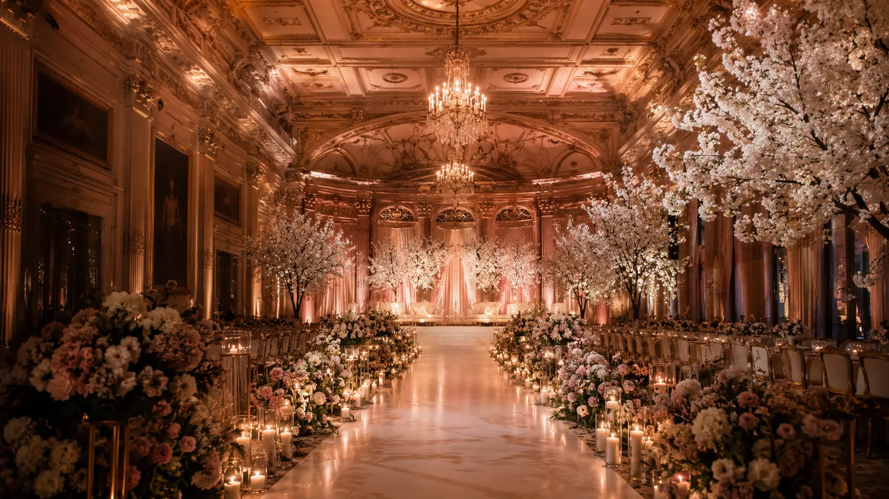
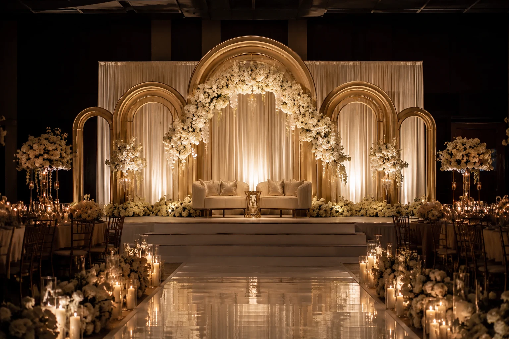
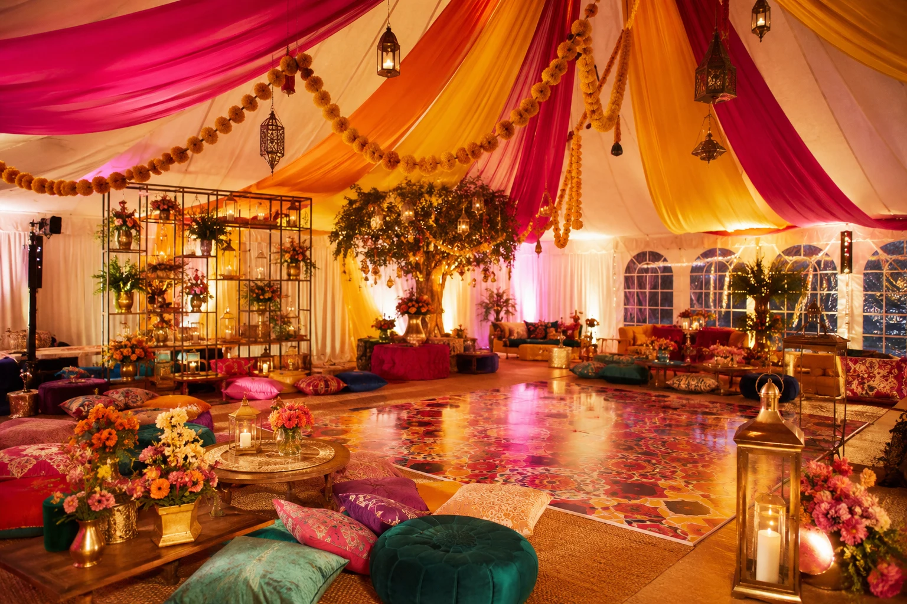
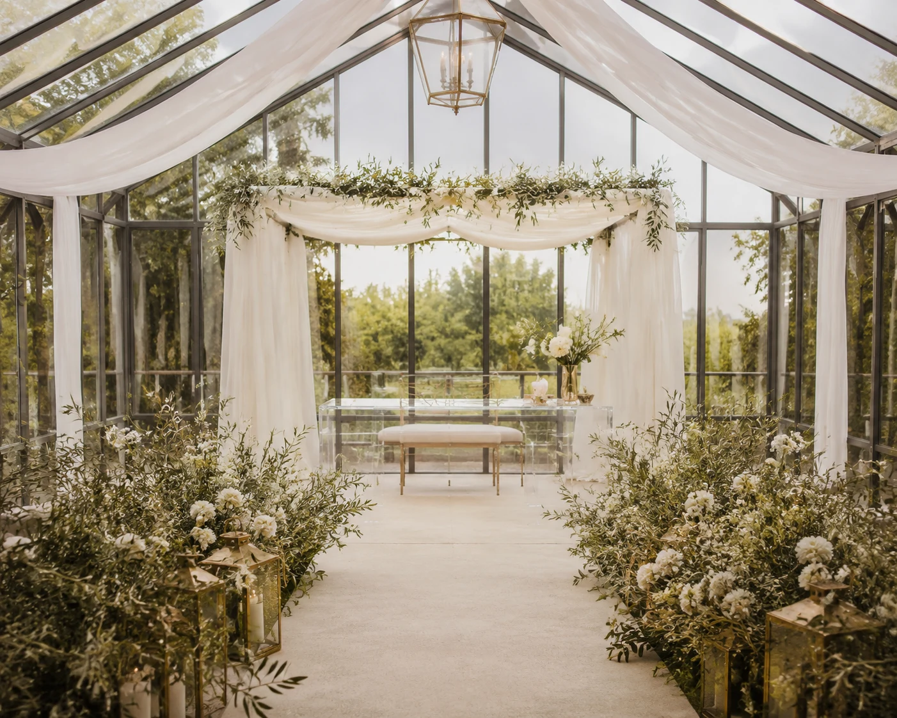
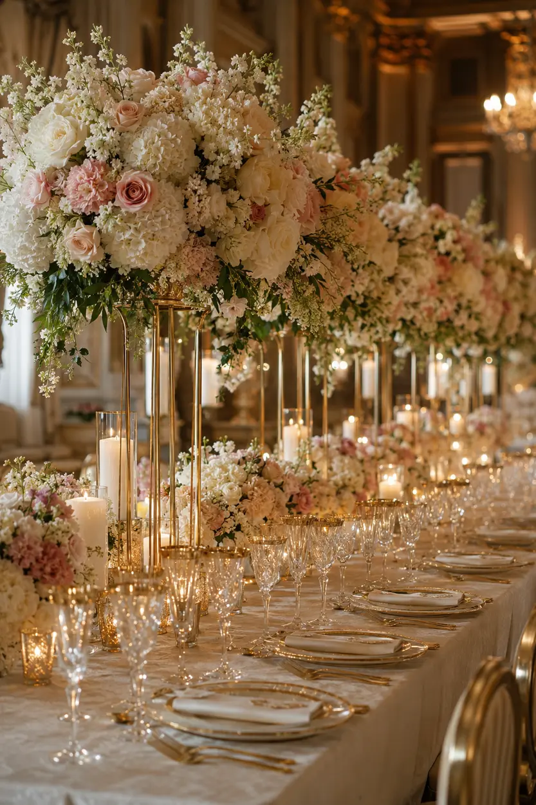
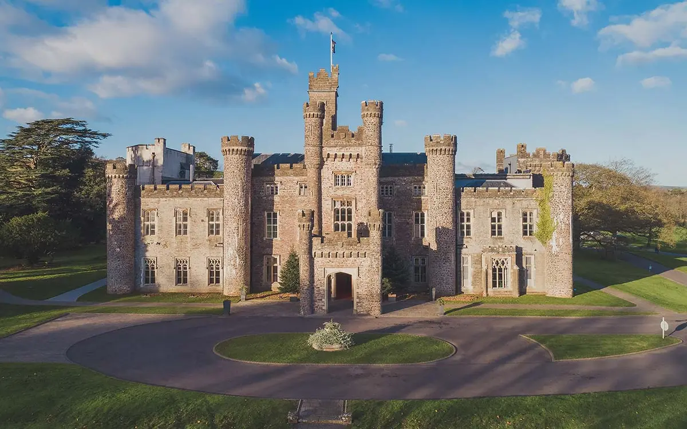
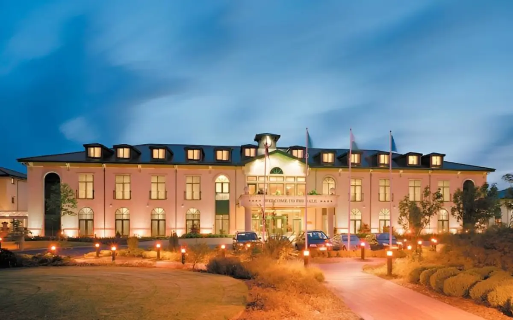
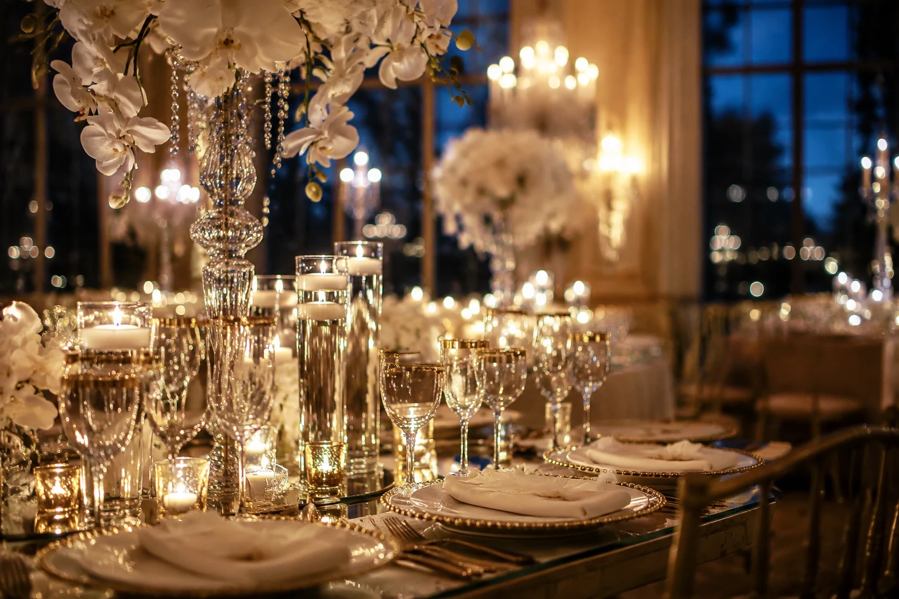

Wedding décor & event styling · Cardiff
Your story.
Beautifully celebrated.
Thoughtful spaces. Meaningful details. A celebration that feels completely, wonderfully yours.
THE ART OF CELEBRATING
Find your kind
of beautiful.
An intimate ceremony. A room filled with candlelight. A celebration alive with colour. Start with the feeling—and let the details follow.
Explore our work
01 / THE ROMANTICIvory & candlelight
STAGES · WALIMA · RECEPTIONS
02 / THE JOYFULA moment of colour
MEHNDI · PRE-WEDDING CELEBRATIONS
03 / THE INTIMATESoftly, beautifully yours
NIKKAH · CEREMONIES · ENGAGEMENTSStyling inspiration from our design collection. Visit our gallery for published Imani Events celebrations.
CULTURE. CONNECTION. CELEBRATION.
For every chapter
of your celebration.
From a quietly meaningful Nikkah to a vibrant Mehndi and a beautifully dressed reception, we bring your traditions and personal taste into one considered design.
Discover our décor servicesNikkah & ceremonies
A beautiful setting for the words that matter.
Mehndi & pre-wedding
Rich colour, joyful details and room to celebrate.
Walima & receptions
Elegant stages, thoughtful tables and a lasting impression.
The finishing touches
Florals, centrepieces, walkways and decorative details.
IMAGINE THE REVEAL
A room. A vision.
A whole new feeling.
Move the slider to explore how florals, candlelight and a thoughtful stage can transform the atmosphere.

THE PEOPLE BEHIND THE BEAUTIFUL
Your traditions.
Your people.
Your kind of magic.
We are a family-run wedding décor and styling team based in Cardiff. We listen to your story, understand the details that matter and create a setting that brings it all together.
Because the most beautiful celebrations feel personal—from the first conversation to the moment you walk into the room.
Meet Imani Events- 01Tell us your story
Your date, venue and the feeling you have in mind.
- 02Shape your vision
Colours, florals and meaningful details, considered together.
- 03Enjoy the moment
We prepare and style your agreed décor at the venue.
A BEAUTIFUL SENSE OF PLACE
Your setting.
Our inspiration.
Grand halls, intimate rooms and spaces full of character. Wherever you are celebrating, the design begins with you.
Tell us about your venueICC Wales
↗
Hensol Castle
↗
The Vale Resort
↗Venue inspiration across our region. Décor and availability are discussed individually for your celebration.
A LITTLE CLARITY, BEFORE WE BEGIN
Wondering
where to start?
You do not need every detail decided. A conversation is a lovely place to begin.
Can you design around our traditions?
Yes. We discuss your ceremonies, family traditions and personal taste, then shape the décor around what matters to you.
What should we bring to our first conversation?
Your event date, venue, guest numbers and a comfortable budget range are helpful. Bring any colours or photographs you love, even if your ideas are still taking shape.
Do you take care of setup?
Yes. We prepare and style your agreed décor at the venue. Access, timings and practical details are discussed with you before the day.
Where do you work?
We are based in Cardiff and style celebrations across South Wales and the South West, including Newport, Swansea and Bristol. Tell us about your venue if it is further afield.

LET'S CREATE SOMETHING MEANINGFUL
It begins
with your story.
Tell us the date, the place and the feeling.
We will help you bring it to life.